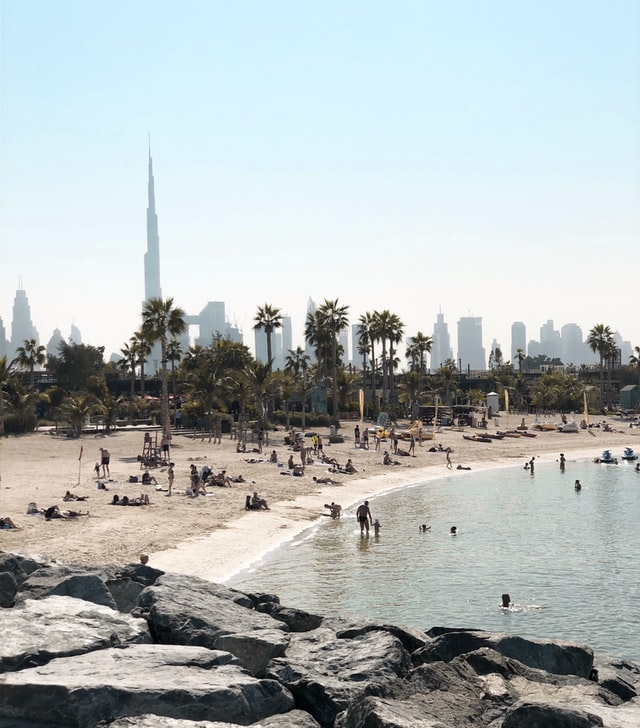
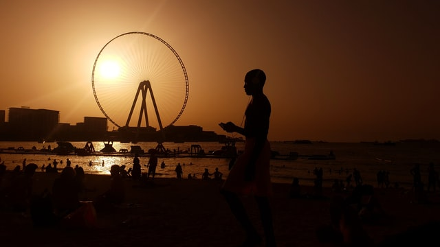

| Ranking | Name | Learn More |
|---|---|---|
| 1 | Kite Beach | Famous for kitesurfing especially and an incredible view of the world renowned Burj Al Arab, great for runs too! |
| 2 | La Mer | La Mer is one of the newer beaches in Dubai, Mainly for chilling and not so much swimming, but the atmosphere is absolutely incredible for a laid back day with an incredible view of Burj Khalifa and its neighboring skyscrapers. |
| 3 | JBR Beach | Incredible to walk around and meet with friends, very luxorious area but is always packed with tourists and locals due to the vast housing properties in the area |
| 4 | Secret Beach | Once a secluded beach that only locals knew about, now it is packed throughout the week being the secret that absolutely everyone knows about. |
| 5 | Jumeirah Open Beach | This just ain't it chief. Don't go. |
Kite Beach
La Mer
JBR Beach
Additionally, there are many private beaches and pools. They are usually located within the hotel area or water parks.